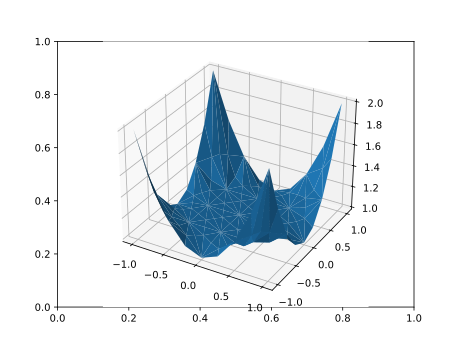

Plotting
Visualization is a package extension (MultiGridBarrierPyPlotExt): it loads automatically once both MultiGridBarrier and PyPlot are imported, and its methods extend PyPlot.plot and PyPlot.savefig — so plot is one function whether you hand it matplotlib arrays or MultiGridBarrier solutions. Without PyPlot, the solver core has no Python dependency at all.
Add PyPlot to your environment (pkg> add PyPlot) and load both packages: using MultiGridBarrier, PyPlot. PyCall arrives with PyPlot; the 3D plotters additionally import the Python pyvista package lazily on first use (installing it from conda-forge if necessary).
What plot does
plot(sol::MGBSOL, k=1; kwargs...) # k-th solution component on sol.geometry
plot(sol::ParabolicSOL, k=1; kwargs...) # HTML5 animation of a time-dependent solve
plot(M::Geometry, z::Vector; kwargs...) # a nodal vector on a geometry
plot(M::Geometry, ts, U::Matrix; ...) # animate the columns of U at times tsThe rendering is chosen by the geometry:
- 1D (
fem1d,spectral1d): line plot. Spectral solutions are sampled throughinterpolate; choose the points withx = -1:0.01:1. - 2D FEM (
fem2d_P1,fem2d_P2,fem2d): triangulated surface plot (plot_trisurf) on the mesh structure. - 2D spectral (
spectral2d): 3D surface plot on an evaluation grid (x = -1:0.01:1, y = -1:0.01:1). - 3D FEM (
fem3d) and embedded manifolds (fem2d/fem1dwithambient = Val(3)): PyVista renders — volume + isosurfaces + slices for volumes, colored quad meshes for surfaces, tubes for curves. These return anMGB3DFigure(PNG bytes) that displays inline in Jupyter/Documenter and saves withsavefig(fig, "out.png").
Remaining keyword arguments pass through to the underlying PyPlot/PyVista calls.
using MultiGridBarrier, PyPlot
sol = mgb_solve(assemble(amg(subdivide(fem2d_P2(), 3)); p = 1.0); verbose = false)
plot(sol)
Animations
Time-dependent solutions animate into an HTML5anim — an HTML5 <video> that embeds inline in Jupyter, Pluto, and Documenter:
sol = parabolic_solve(amg(subdivide(fem2d_P1(), 3)); h = 0.1)
plot(sol) # matplotlib.animation (1D/2D)
plot(sol.geometry, ts, U) # or animate any matrix of frames directlyThe animation advances at a fixed frame rate (frame_time seconds per video frame); for irregular ts, each video frame shows the latest data frame with timestamp ≤ the current video time. In 1D/2D the video is produced by matplotlib.animation (embed_limit caps the embedded size in megabytes, and the printer callback receives the Matplotlib animation object, e.g. to anim.save("out.mp4")). In 3D, PyVista frames are encoded by ffmpeg.
Result types
MultiGridBarrier.MGB3DFigure — Type
MGB3DFigureA rendered 3D plot returned by the FEM3D plot methods of the MultiGridBarrierPyPlotExt extension (load PyPlot to enable them); the png field holds the PNG bytes. Displays inline as image/png (Jupyter, Documenter, …); write it to a file with savefig(fig, "out.png").
MultiGridBarrier.HTML5anim — Type
HTML5animWrapper around an HTML5 <video> produced by the parabolic-animation plot methods. It carries the rendered video markup in its anim::String field and defines show(io, MIME"text/html"(), ::HTML5anim), so returning one as the last value of a Jupyter/Pluto cell (or in Documenter output) embeds the animation inline.